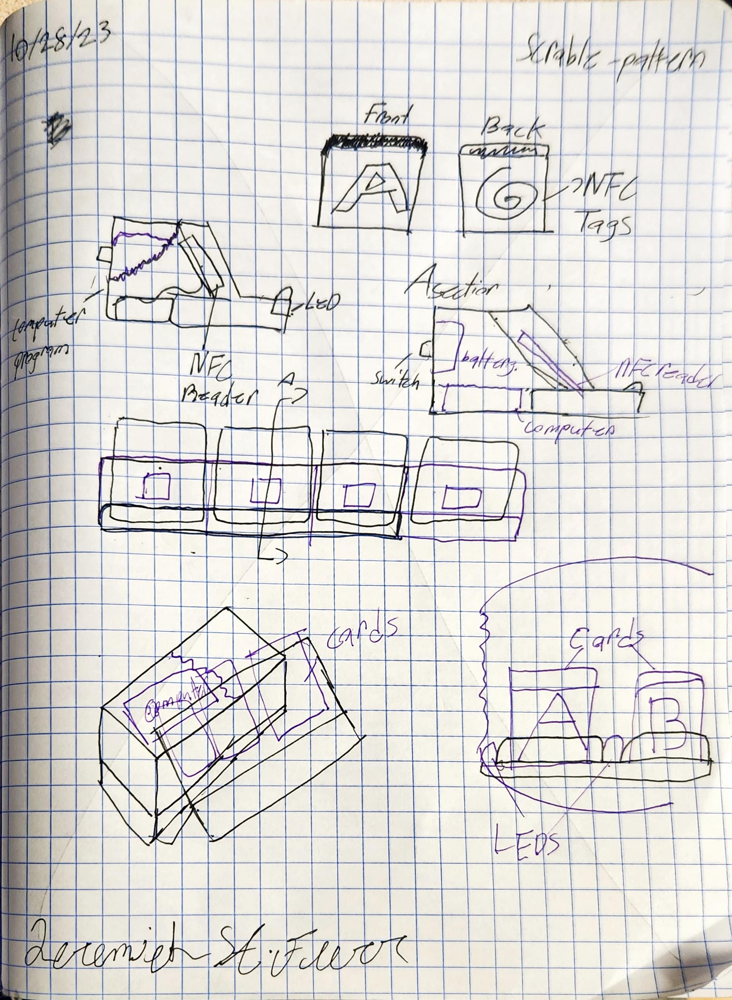
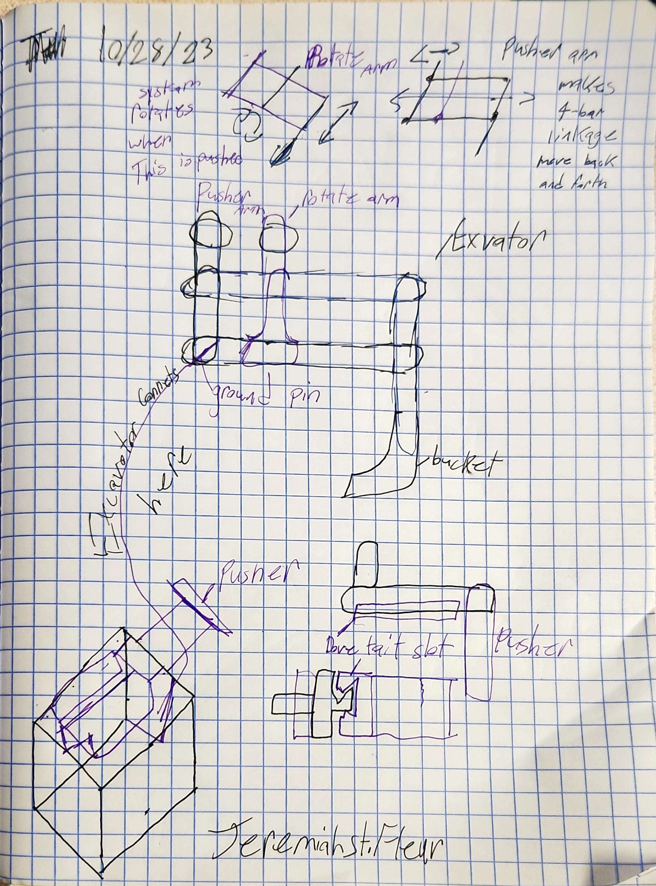

Project Overview
As part of EGN2020C, our team designed and built a functional High-Strike carnival game mechanism — the classic tower with a lever, striker, and bell at the top. The project followed the full engineering design process from problem definition and conceptual sketching through CAD modeling, fabrication, and live demonstration.
Design & Concept
The team explored several mechanism configurations before settling on a lever-and-puck design optimized for consistent force transmission. Early sketches focused on striker geometry and the sliding tower rail system.



Build & Demonstration
The team fabricated the mechanism using a combination of laser-cut acrylic, 3D-printed components, and off-the-shelf hardware. The final build was demonstrated in a live class competition where teams tested striker force and consistency.
My Contributions
- Mechanism Design: Led the CAD modeling of the lever arm and striker puck geometry in Onshape.
- Sketching & Concept: Produced the initial hand-sketched concept proposals used for team down-selection.
- Fabrication: Assisted in assembly and fit-up of the structural tower components.
- Documentation: Contributed to the engineering design report including design justification and performance analysis.